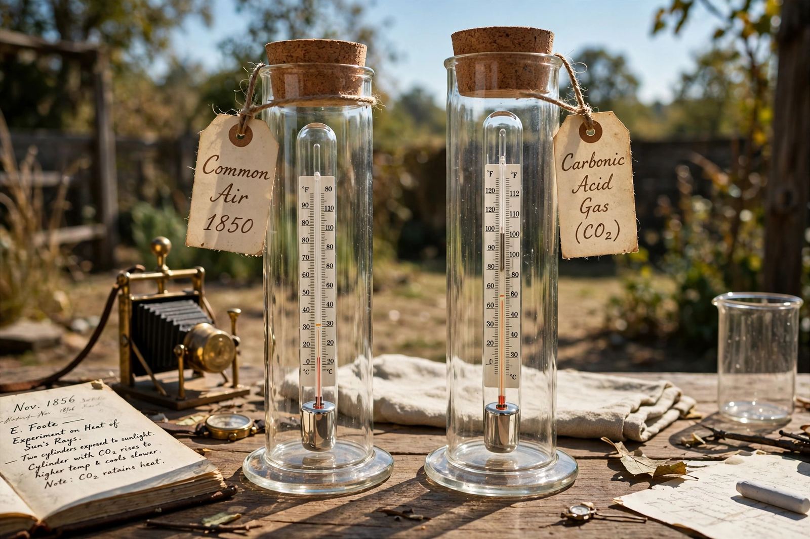

Eunice Newton Foote

Eunice Newton Foote (1819–1888) was an American scientist and women's rights campaigner whose 1856 experiments were the first known demonstration that carbon dioxide and water vapour trap the Sun's heat — anticipating by three years the more famous measurements of {L('John_Tyndall')} and quietly foreshadowing the science of the {L('Greenhouse_effect')}.
Foote concluded her brief paper with a striking speculation: an atmosphere richer in carbon dioxide 'would give to our earth a high temperature'. For a century and a half her priority was largely forgotten.
The experiments
Foote filled glass cylinders with different gases — common air, hydrogen, oxygen, carbon dioxide and moist air — placed thermometers inside, and compared their heating in sunlight and cooling in shade. Carbon dioxide heated most and cooled slowest; moist air heated more than dry. Her paper 'Circumstances affecting the heat of the sun's rays' was read on her behalf by Joseph Henry at the 1856 meeting of the American Association for the Advancement of Science, since women did not present at such meetings.
Life and rediscovery
Foote lived in Seneca Falls, New York, was a signatory of the 1848 Declaration of Sentiments for women's rights, and patented several inventions. Her climate work was noticed in a few journals of the day and then dropped from the story, as Tyndall's more precise spectroscopy (published 1859) took the field. Historians rediscovered her paper in the 2010s; debate continues over how much she understood of the infrared mechanism, but her experimental result and her climate inference were genuinely first. See {L('Greenhouse_effect')}.
See also: John Tyndall · Greenhouse effect · Svante Arrhenius · Women in science